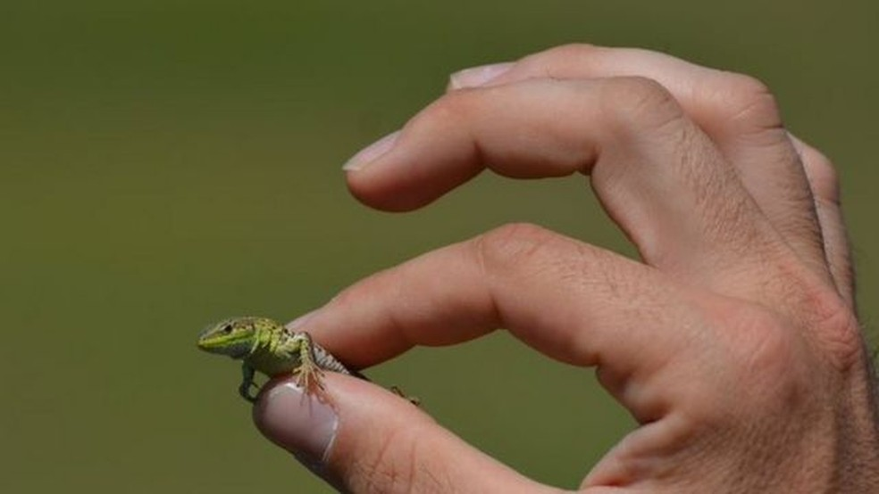

Bem-vindo ao nosso site que esplica sobre Aquecimento Global
Exploramos as causas, efeitos e soluções para o aquecimento global.
Pesquisas



As mudanças climáticas estão encolhendo os animais
Cientistas de todo o mundo detectaram que o tamanho do corpo de várias espécies está diminuindo. E esse fenômeno tem sido relacionado ao aquecimento global. TOPO